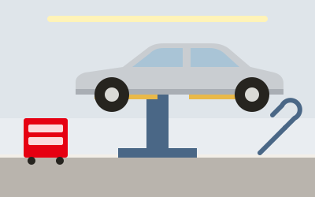

ここに記事本文が入ります（移行時に差し替え）。以下は見た目確認用のサンプルです。
タカヤモーターです。いつもありがとうございます。今回は、日々の整備で気づいたことをお伝えします。
見出しの例
本文の段落です。写真を入れる場合は下のように横幅いっぱいで表示します。

記事の写真もうひとつの見出し
- 箇条書きの例
- 箇条書きの例
ご不明な点があれば、お気軽に お問い合わせ ください。
「これは直りますか」「いくらぐらいですか」だけでも構いません。お電話でもフォームでもお受けします。